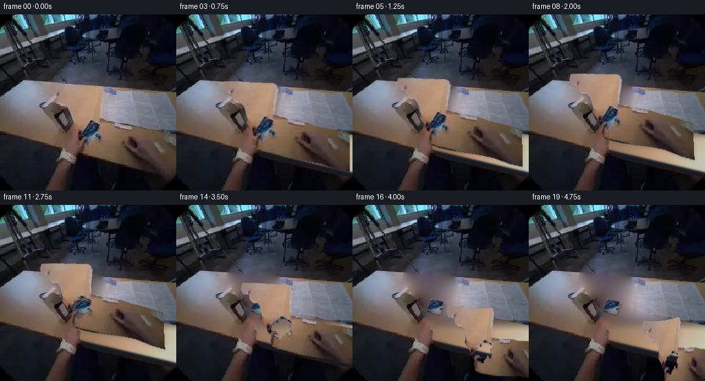
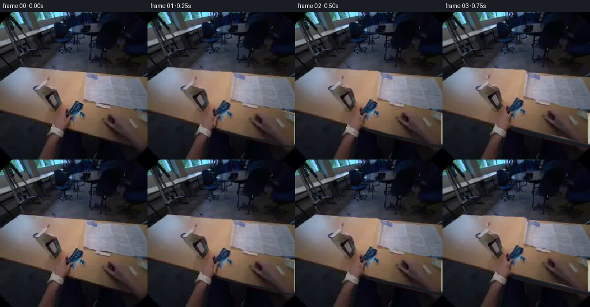
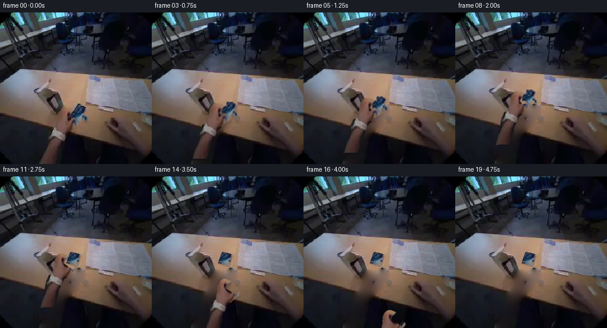
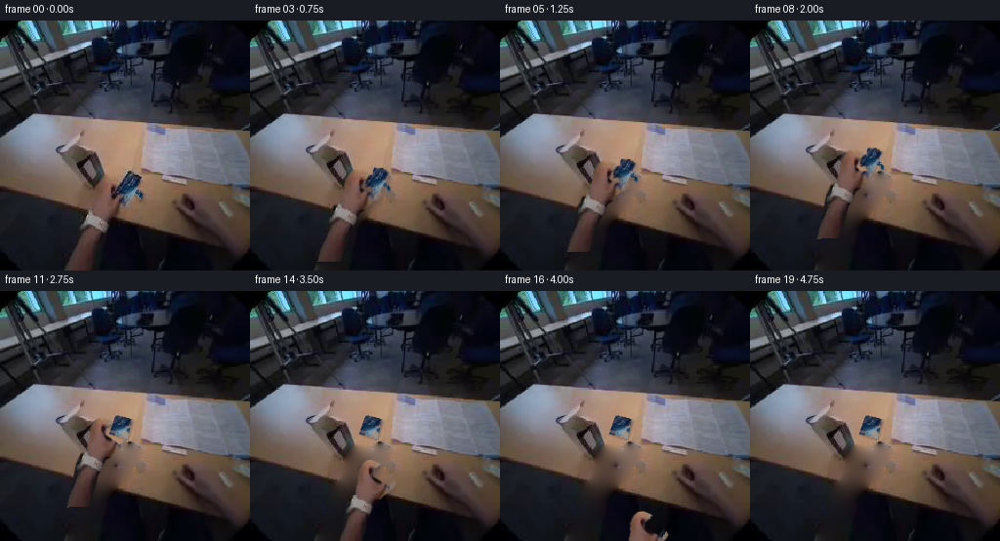
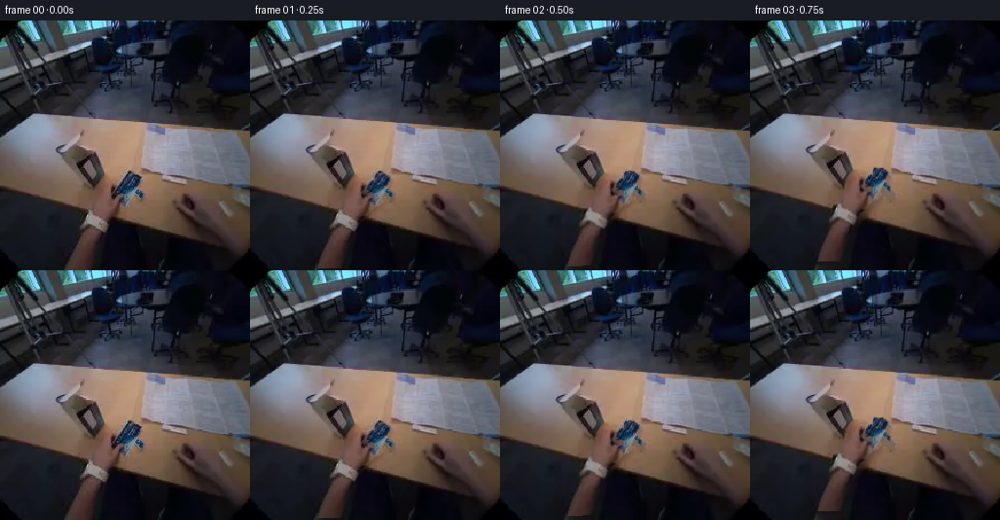

CODING AGENTS AS PIXEL WORLD MODELS
traex/GPT-6.1-Sol · common50_0022
点击播放 · 原生 RGB 像素
逐轮保存的候选
回放视频、检查图与代码变化。
每份候选均可单独播放。实际图片检查记录在下方工具轨迹中。
候选 01播放与检查图
点击播放 · 原生 RGB 像素


展开代码变化
--- 上一保存版本
+++ 本次保存版本
@@ -0,0 +1,215 @@
+"""Produce a pixel-based egocentric sachet placement, without a learned renderer."""
+from pathlib import Path
+import numpy as np
+from PIL import Image, ImageDraw, ImageFilter
+from scipy.ndimage import map_coordinates, gaussian_filter, distance_transform_edt, binary_dilation
+from scipy.sparse import csr_matrix
+from scipy.sparse.linalg import cg
+import artifact_io
+
+ROOT = Path(__file__).resolve().parent
+N=256
+Y,X=np.mgrid[:N,:N].astype(np.float32)
+
+def polygon(points):
+ im=Image.new('L',(N,N))
+ ImageDraw.Draw(im).polygon(points,fill=255)
+ return np.asarray(im,dtype=np.float32)/255.
+
+def soft(mask, sigma=.45):
+ return gaussian_filter(mask.astype(np.float32),sigma)
+
+def sample(arr,x,y,order=1):
+ if arr.ndim==2:
+ return map_coordinates(arr,[y,x],order=order,mode='constant',cval=0)
+ return np.stack([map_coordinates(arr[...,c],[y,x],order=order,mode='nearest') for c in range(arr.shape[-1])],-1)
+
+def harmonic(image,mask):
+ """Poisson-free harmonic continuation of the nearby photographic surface."""
+ mask=mask.astype(bool)
+ ids=np.full(mask.shape,-1,dtype=np.int32)
+ ids[mask]=np.arange(mask.sum())
+ ys,xs=np.nonzero(mask)
+ rows=[np.arange(len(ys))];cols=[np.arange(len(ys))];vals=[np.full(len(ys),4.)]
+ b=np.zeros((len(ys),3),float)
+ for dy,dx in [(1,0),(-1,0),(0,1),(0,-1)]:
+ ny=np.clip(ys+dy,0,N-1);nx=np.clip(xs+dx,0,N-1)
+ j=ids[ny,nx];inside=j>=0
+ rows.append(np.flatnonzero(inside));cols.append(j[inside]);vals.append(np.full(inside.sum(),-1.))
+ b[~inside]+=image[ny[~inside],nx[~inside]]
+ A=csr_matrix((np.concatenate(vals),(np.concatenate(rows),np.concatenate(cols))),shape=(len(ys),len(ys)))
+ out=image.copy().astype(float)
+ for c in range(3):
+ sol,_=cg(A,b[:,c],x0=np.full(len(ys),image[~mask,c].mean()),rtol=1e-5,maxiter=1300)
+ out[ys,xs,c]=sol
+ return out
+
+def homography(src,dst):
+ A=[];B=[]
+ for (u,v),(x,y) in zip(src,dst):
+ A += [[u,v,1,0,0,0,-x*u,-x*v],[0,0,0,u,v,1,-y*u,-y*v]]
+ B += [x,y]
+ return np.r_[np.linalg.solve(A,B),1].reshape(3,3)
+
+def project(H,x,y):
+ d=H[2,0]*x+H[2,1]*y+H[2,2]
+ return ((H[0,0]*x+H[0,1]*y+H[0,2])/d,(H[1,0]*x+H[1,1]*y+H[1,2])/d)
+
+def ease(t):
+ t=np.clip(t,0,1);return t*t*(3-2*t)
+
+def composite(bg,rgb,a):
+ return bg*(1-a[...,None])+rgb*a[...,None]
+
+
+def build():
+ original=np.asarray(Image.open(ROOT/'first_frame.png').convert('RGB')).astype(np.float32)
+ # A manually specified silhouette, obtained by numeric RGB boundary inspection.
+ hand=polygon([(73,101),(97,101),(109,102),(127,103),(145,104),(150,107),
+ (152,113),(150,128),(147,140),(146,151),(158,153),(164,157),
+ (181,160),(195,163),(209,168),(231,172),(255,177),(263,180),
+ (264,237),(255,234),(237,231),(215,224),(193,220),(171,216),
+ (150,212),(135,208),(123,204),(119,200),(118,192),(119,184),
+ (115,180),(113,173),(110,169),(106,164),(103,159),(104,153),
+ (104,145),(101,137),(98,134),(91,133),(87,129),(84,126),
+ (84,120),(79,118),(74,118),(72,114),(71,109)])
+ # Foil visible between thumb and curled index. The back edge remains occluded.
+ packet=polygon([(130,155),(140,156),(145,160),(147,168),(142,175),
+ (147,179),(146,183),(137,187),(131,190),(126,187),
+ (120,181),(120,173),(123,164),(126,158)])
+ # Restrict packet to its actual cool blue and white photographically visible pixels.
+ r,g,b=original.transpose(2,0,1)
+ foil=(b>r+4)&(b>g+1)
+ foil |= ((np.maximum.reduce([r,g,b])-np.minimum.reduce([r,g,b])<22)&(r>112))
+ packet*=foil
+ # The object is covered at the bottom by fingers; preserve their warm colors.
+ packet*=polygon([(128,154),(147,158),(149,171),(148,183),(137,190),
+ (123,189),(118,177),(122,164)])
+ occupied=np.maximum(hand,packet)
+ # Fill only the newly visible surface. Outside of this region all pixels are retained.
+ inpm=binary_dilation(occupied>.5,iterations=2)
+ bg=harmonic(original,inpm)
+ # Reconstruct the diagonal front table edge where it had been hidden by the wrist.
+ # Fit exposed brown grain on the unobscured left side to a gently varying surface.
+ valid=(X>4)&(X<80)&(Y>145)&(Y<185)&(Y<168+.24*X)&(r-g>8)&(g-b>3)&(r>70)
+ xx=X[valid];yy=Y[valid]
+ F=np.stack([np.ones_like(xx),(xx-50)/100,(yy-160)/60,((xx-50)/100)**2,
+ ((xx-50)/100)*((yy-160)/60)],axis=1)
+ coef=np.linalg.lstsq(F,original[valid],rcond=None)[0]
+ xf=(X-50)/100;yf=(Y-160)/60
+ # No quadratic extrapolation: the camera exposure falls off to the right.
+ table=np.stack([np.ones_like(X),xf,yf,np.minimum(xf*xf,.16),xf*yf],axis=-1)@coef
+ table=np.clip(table,45,195)
+ edge=169+.235*X
+ dark=np.stack([np.full_like(X,24),np.full_like(X,26),np.full_like(X,33)],-1)
+ near=1/(1+np.exp(np.clip((Y-edge)/.8,-50,50)))
+ lower=composite(dark,table,near)
+ w=ease((Y-164)/20)*inpm
+ bg=composite(bg,lower,w)
+ # Fine input-derived texture avoids a synthetically empty patch.
+ grain=original-gaussian_filter(original,(1.15,1.15,0))
+ gx=np.mod(X,64).astype(int)+7;gy=(150+np.mod(Y,17)).astype(int)
+ bg += grain[gy,gx]*inpm[...,None]*.45
+ bg=np.clip(bg,0,255)
+ Image.fromarray(bg.astype('uint8')).save(ROOT/'.tmp/background.png')
+ Image.fromarray((occupied*255).astype('uint8')).save(ROOT/'.tmp/occupied.png')
+
+ # Reconstruct a rectangular face from the visible foil, not from invented typography.
+ corners0=np.array([(129.,155.),(146.,160.),(138.,188.),(121.,182.)])
+ unit=np.array([(0.,0.),(1.,0.),(1.,1.),(0.,1.)])
+ H0=homography(unit,corners0)
+ th,tw=64,40
+ v,u=np.mgrid[:th,:tw].astype(float);u/=tw-1;v/=th-1
+ sx,sy=project(H0,u,v)
+ tex=sample(original,sx,sy)
+ vis=sample(packet,sx,sy)>.35
+ # Nearest observed foil continues the portions concealed by the gripping fingers.
+ _,inds=distance_transform_edt(~vis,return_indices=True)
+ tex[~vis]=tex[inds[0][~vis],inds[1][~vis]]
+ tex=gaussian_filter(tex,(.32,.32,0))
+ # Heat-sealed narrow border in the same foil tint.
+ rim=np.minimum.reduce([u,1-u,v*.72,(1-v)*.72])
+ border=np.clip((.024-rim)/.024,0,1)[...,None]*.22
+ tex=tex*(1-border)+np.array([148,162,175])*border
+ Image.fromarray(np.clip(tex,0,255).astype('uint8')).save(ROOT/'.tmp/sachet_texture.png')
+ # Empty grip silhouette. Leave the opening transparent, retaining the actual fingers.
+ hand_only=hand*(1-packet)
+ alpha_carry=soft(occupied,.52)
+ alpha_hand=soft(hand_only,.48)
+
+ def warp_hand(progress,release,withdraw,whole=True):
+ # Wrist-anchored forward motion: finger displacement is larger than arm displacement.
+ dx=-15*progress;dy=-23*progress
+ angle=-.045*progress+.11*withdraw
+ scale=1-.075*progress
+ # Withdrawal is an unhurried pull toward the lower-right of the egocentric view.
+ dx+=100*withdraw;dy+=89*withdraw
+ c=np.cos(angle);s=np.sin(angle)
+ # Inverse local transform, with the off-screen wrist providing the anchor.
+ weight=1-.53*ease((X-175)/100)
+ tx=X-dx*weight;ty=Y-dy*weight
+ sx=((tx-134)*c+(ty-168)*s)/scale+134
+ sy=(-(tx-134)*s+(ty-168)*c)/scale+168
+ # Small real finger opening before pulling the hand away.
+ thumb=np.exp(-((sx-115)/18)**2-((sy-152)/35)**2)
+ fingers=np.exp(-((sx-143)/19)**2-((sy-164)/25)**2)
+ sx-=release*(5.5*fingers-4.0*thumb)
+ sy-=release*(-3.5*thumb+2.0*fingers)
+ color=sample(original,sx,sy)
+ a=sample(alpha_carry if whole else alpha_hand,sx,sy)
+ return color,a
+
+ def packet_layer(corners):
+ h=homography(unit,corners)
+ u,v=project(np.linalg.inv(h),X,Y)
+ px=u*(tw-1);py=v*(th-1)
+ color=sample(tex,px,py)
+ # Subpixel foil edge with a slight sealed ripple.
+ d=np.minimum.reduce([u*tw,(1-u)*tw,v*th,(1-v)*th])
+ a=np.clip(d+.4,0,1)
+ valid=(u>-.02)&(u<1.02)&(v>-.02)&(v<1.02)
+ a*=valid
+ return color,a
+
+ # Final planar footprint, placed well inside the light-brown tabletop.
+ corners1=np.array([(114.,136.),(134.,141.),(127.,159.),(107.,154.)])
+ frames=[]
+ for i in range(20):
+ if i==0:
+ frames.append(original.astype('uint8'));continue
+ t=i/4
+ p=ease(t/2.35)
+ opening=ease((t-2.15)/.85)
+ retreat=ease((t-2.8)/1.8)
+ canvas=bg.copy()
+ # Close, diffuse hand shadow, shrinking into contact and following withdrawal.
+ color,ha=warp_hand(p,opening,retreat,whole=opening<.001)
+ hs=gaussian_filter(sample(ha,X-2,Y-3),2.1)
+ # A background photograph already includes the original lighting. New shadows are subtle.
+ canvas*=1-.10*hs[...,None]*(1-.4*retreat)
+ if t<2.2:
+ # Preserve the initial hidden edges and finger-over-foil order exactly while carrying.
+ canvas=composite(canvas,color,ha)
+ else:
+ # At touchdown the wrapper tips onto the table; the grip opens on top of it.
+ flatten=ease((t-1.7)/1.0)
+ carry_corners=(corners0-[134,168])*(1-.075*p)+[134-15*p,168-23*p]
+ corners=carry_corners*(1-flatten)+corners1*flatten
+ pc,pa=packet_layer(corners)
+ sh=gaussian_filter(sample(pa,X-1.2,Y-1.6),1.0)
+ canvas*=1-.24*sh[...,None]
+ canvas=composite(canvas,pc,pa)
+ canvas=composite(canvas,color,ha)
+ # Mild motion softness only when the hand is actually travelling.
+ if 0<i<13:
+ blurred=gaussian_filter(canvas,(.22,.22,0))
+ canvas=canvas*.75+blurred*.25
+ out=np.clip(canvas,0,255).astype(np.uint8)
+ frames.append(out)
+ return np.stack(frames)
+
+if __name__=='__main__':
+ (ROOT/'.tmp').mkdir(exist_ok=True)
+ video=build()
+ artifact_io.save(video,ROOT)
+ print('Saved',video.shape,video.dtype)
候选 02播放与检查图
点击播放 · 原生 RGB 像素

展开代码变化
--- 上一保存版本
+++ 本次保存版本
@@ -65,14 +65,13 @@
def build():
original=np.asarray(Image.open(ROOT/'first_frame.png').convert('RGB')).astype(np.float32)
# A manually specified silhouette, obtained by numeric RGB boundary inspection.
- hand=polygon([(73,101),(97,101),(109,102),(127,103),(145,104),(150,107),
- (152,113),(150,128),(147,140),(146,151),(158,153),(164,157),
- (181,160),(195,163),(209,168),(231,172),(255,177),(263,180),
- (264,237),(255,234),(237,231),(215,224),(193,220),(171,216),
- (150,212),(135,208),(123,204),(119,200),(118,192),(119,184),
- (115,180),(113,173),(110,169),(106,164),(103,159),(104,153),
- (104,145),(101,137),(98,134),(91,133),(87,129),(84,126),
- (84,120),(79,118),(74,118),(72,114),(71,109)])
+ hand=polygon([(105,161),(109,159),(116,159),(122,162),(125,165),
+ (122,169),(117,173),(115,178),(118,181),(122,184),(127,184),
+ (131,181),(135,182),(137,186),(133,190),(126,193),(122,197),
+ (119,201),(113,205),(110,211),(106,219),(103,223),(101,233),
+ (96,245),(92,257),(68,260),(71,247),(75,233),(78,221),
+ (80,212),(82,205),(87,196),(93,194),(95,186),(98,178),
+ (99,169),(101,165)])
# Foil visible between thumb and curled index. The back edge remains occluded.
packet=polygon([(130,155),(140,156),(145,160),(147,168),(142,175),
(147,179),(146,183),(137,187),(131,190),(126,187),
@@ -80,7 +79,7 @@
# Restrict packet to its actual cool blue and white photographically visible pixels.
r,g,b=original.transpose(2,0,1)
foil=(b>r+4)&(b>g+1)
- foil |= ((np.maximum.reduce([r,g,b])-np.minimum.reduce([r,g,b])<22)&(r>112))
+ foil |= ((np.maximum.reduce([r,g,b])-np.minimum.reduce([r,g,b])<19)&(r>112)&(b>r-2))
packet*=foil
# The object is covered at the bottom by fingers; preserve their warm colors.
packet*=polygon([(128,154),(147,158),(149,171),(148,183),(137,190),
@@ -89,23 +88,8 @@
# Fill only the newly visible surface. Outside of this region all pixels are retained.
inpm=binary_dilation(occupied>.5,iterations=2)
bg=harmonic(original,inpm)
- # Reconstruct the diagonal front table edge where it had been hidden by the wrist.
- # Fit exposed brown grain on the unobscured left side to a gently varying surface.
- valid=(X>4)&(X<80)&(Y>145)&(Y<185)&(Y<168+.24*X)&(r-g>8)&(g-b>3)&(r>70)
- xx=X[valid];yy=Y[valid]
- F=np.stack([np.ones_like(xx),(xx-50)/100,(yy-160)/60,((xx-50)/100)**2,
- ((xx-50)/100)*((yy-160)/60)],axis=1)
- coef=np.linalg.lstsq(F,original[valid],rcond=None)[0]
- xf=(X-50)/100;yf=(Y-160)/60
- # No quadratic extrapolation: the camera exposure falls off to the right.
- table=np.stack([np.ones_like(X),xf,yf,np.minimum(xf*xf,.16),xf*yf],axis=-1)@coef
- table=np.clip(table,45,195)
- edge=169+.235*X
- dark=np.stack([np.full_like(X,24),np.full_like(X,26),np.full_like(X,33)],-1)
- near=1/(1+np.exp(np.clip((Y-edge)/.8,-50,50)))
- lower=composite(dark,table,near)
- w=ease((Y-164)/20)*inpm
- bg=composite(bg,lower,w)
+ # Under the hand are the photographed wood surface and dark area below its edge.
+ # Harmonic continuation preserves the diagonal table edge from both visible sides.
# Fine input-derived texture avoids a synthetically empty patch.
grain=original-gaussian_filter(original,(1.15,1.15,0))
gx=np.mod(X,64).astype(int)+7;gy=(150+np.mod(Y,17)).astype(int)
@@ -139,20 +123,20 @@
def warp_hand(progress,release,withdraw,whole=True):
# Wrist-anchored forward motion: finger displacement is larger than arm displacement.
- dx=-15*progress;dy=-23*progress
- angle=-.045*progress+.11*withdraw
+ dx=-9*progress;dy=-30*progress
+ angle=-.045*progress-.10*withdraw
scale=1-.075*progress
# Withdrawal is an unhurried pull toward the lower-right of the egocentric view.
- dx+=100*withdraw;dy+=89*withdraw
+ dx+=55*withdraw;dy+=128*withdraw
c=np.cos(angle);s=np.sin(angle)
# Inverse local transform, with the off-screen wrist providing the anchor.
- weight=1-.53*ease((X-175)/100)
+ weight=np.ones_like(X)
tx=X-dx*weight;ty=Y-dy*weight
sx=((tx-134)*c+(ty-168)*s)/scale+134
sy=(-(tx-134)*s+(ty-168)*c)/scale+168
# Small real finger opening before pulling the hand away.
- thumb=np.exp(-((sx-115)/18)**2-((sy-152)/35)**2)
- fingers=np.exp(-((sx-143)/19)**2-((sy-164)/25)**2)
+ thumb=np.exp(-((sx-112)/10)**2-((sy-169)/12)**2)
+ fingers=np.exp(-((sx-124)/12)**2-((sy-185)/12)**2)
sx-=release*(5.5*fingers-4.0*thumb)
sy-=release*(-3.5*thumb+2.0*fingers)
color=sample(original,sx,sy)
@@ -172,7 +156,7 @@
return color,a
# Final planar footprint, placed well inside the light-brown tabletop.
- corners1=np.array([(114.,136.),(134.,141.),(127.,159.),(107.,154.)])
+ corners1=np.array([(118.,126.),(136.,131.),(130.,151.),(111.,146.)])
frames=[]
for i in range(20):
if i==0:
@@ -183,7 +167,7 @@
retreat=ease((t-2.8)/1.8)
canvas=bg.copy()
# Close, diffuse hand shadow, shrinking into contact and following withdrawal.
- color,ha=warp_hand(p,opening,retreat,whole=opening<.001)
+ color,ha=warp_hand(p,opening,retreat,whole=t<2.2)
hs=gaussian_filter(sample(ha,X-2,Y-3),2.1)
# A background photograph already includes the original lighting. New shadows are subtle.
canvas*=1-.10*hs[...,None]*(1-.4*retreat)
@@ -193,7 +177,7 @@
else:
# At touchdown the wrapper tips onto the table; the grip opens on top of it.
flatten=ease((t-1.7)/1.0)
- carry_corners=(corners0-[134,168])*(1-.075*p)+[134-15*p,168-23*p]
+ carry_corners=(corners0-[134,168])*(1-.075*p)+[134-9*p,168-30*p]
corners=carry_corners*(1-flatten)+corners1*flatten
pc,pa=packet_layer(corners)
sh=gaussian_filter(sample(pa,X-1.2,Y-1.6),1.0)
候选 03播放与检查图
点击播放 · 原生 RGB 像素


展开代码变化
--- 上一保存版本
+++ 本次保存版本
@@ -111,6 +111,9 @@
_,inds=distance_transform_edt(~vis,return_indices=True)
tex[~vis]=tex[inds[0][~vis],inds[1][~vis]]
tex=gaussian_filter(tex,(.32,.32,0))
+ # The unfolded white end catches a little more of the overhead light after placement.
+ white_end=ease((v-.57)/.17)[...,None]
+ tex=tex*(1+.12*white_end)
# Heat-sealed narrow border in the same foil tint.
rim=np.minimum.reduce([u,1-u,v*.72,(1-v)*.72])
border=np.clip((.024-rim)/.024,0,1)[...,None]*.22
可观测工具轨迹
实际执行的命令与返回图片。
命令 1exit 0
/bin/bash -lc "ls -la && cat prompt.txt && printf '\\n--- RULES ---\\n' && cat GENERATION_RULES.md"
命令 2exit 0
/bin/bash -lc "cat task_spec.json && cat artifact_io.py && python - <<'PY'
from PIL import Image
import numpy as np
im=np.array(Image.open('first_frame.png'))
print('shape',im.shape)
# nearest color category character
a=im.astype(float)
palette={'W':(220,220,220),'w':(171,174,177),'K':(31,30,28),'.':(89,78,58),'t':(145,122,89),'T':(185,163,126),'s':(195,145,112),'S':(156,100,69),'B':(28,67,125),'b':(67,106,159),'G':(65,85,66)}
keys=list(palette); cols=np.array(list(palette.values()))
for y in range(0,256,4):
row=[]
for x in range(0,256,4):
c=a[y:y+4,x:x+4].mean((0,1))
row.append(keys[np.argmin(((cols-c)**2).sum(1))])
print(f'{y:3d} '+''.join(row))
print('range/mean', im.min((0,1)),im.max((0,1)),im.mean((0,1)))
PY"命令 3exit 0
/bin/bash -lc "python - <<'PY'
from PIL import Image
import numpy as np, colorsys
im=np.array(Image.open('first_frame.png'))
# hue categories: grayscale luminance, skin orange, yellow wood, blue, green, red
for y in range(80,228,2):
s=''
for x in range(0,256,2):
r,g,b=im[y:y+2,x:x+2].mean((0,1)); h,sa,v=colorsys.rgb_to_hsv(r/255,g/255,b/255)
if v<.12: c=' '
elif sa<.17: c='@' if v>.75 else 'O' if v>.55 else 'o' if v>.36 else '.'
elif b>r*1.12 and b>g*1.02:c='B' if v>.4 else 'b'
elif r>g*1.12 and g>b*1.18: c='S' if r>135 else 's'
elif r>g*1.08 and r>b*1.15: c='H' if r>135 else 'h'
elif g>r*1.06 and g>b*1.08:c='g'
elif v>.55:c='T'
else:c=':'
s+=c
print(f'{y:3} {s}')
print('\\nRGB GRID crop 80:180,136:216 sampled 5:')
for y in range(136,216,5):
print(y, ' '.join(f'{x}:{tuple(im[y:y+3,x:x+3].mean((0,1)).astype(int))}' for x in range(80,181,5)))
PY"命令 4exit 0
/bin/bash -lc "python - <<'PY'
from PIL import Image
import numpy as np
I=np.array(Image.open('first_frame.png')).astype(int)
for y in range(95,216,5):
print(y,' '.join(f'{x}={tuple(I[y,x])}' for x in range(0,256,10)))
PY"命令 5exit 0
/bin/bash -lc "python - <<'PY'
from PIL import Image
import numpy as np
I=np.array(Image.open('first_frame.png')).astype(float)
# numeric row color differences identify edges and stretches
for y in [96,100,104,108,112,116,120,124,128,132,136,140,144,148,152,156,160,164,168,172,176,180,184,188,192,196,200,204,208,212,216,220,224,228]:
r,g,b=I[y].T
lab=np.where((r-g>18)&(g-b>10),'S',np.where((b-r>7)&(b-g>5),'B',np.where(r>105,'W',np.where(r<45,'k','t'))))
# short stretches filtered to3
runs=[];last=lab[0];start=0
for x in range(1,257):
if x==256 or lab[x]"'!=last:
if x-start>=3:runs.append(f'"'{start}-{x-1}:{last}')
if x<256: start=x;last=lab[x]
print(y,' '.join(runs))
PY"命令 6exit 0
/bin/bash -lc "python - <<'PY'
from PIL import Image
import numpy as np
im=np.array(Image.open('first_frame.png')).astype(float)
# ascii saturation and luminance crop
for mode in ['luminance','r-g','g-b','blue']:
print('\\n',mode)
for y in range(136,222,2):
s=''
for x in range(72,224,2):
r,g,b=im[y:y+2,x:x+2].mean((0,1))
v=(r+g+b)/3/210 if mode=='luminance' else (r-g+5)/65 if mode=='r-g' else (g-b+5)/50 if mode=='g-b' else (b-r+40)/100
s+=' .,:;irsXA253hMHGS#9B&@'[int(np.clip(v,0,1)*21)]
print(f'{y:3} {s}')
PY"命令 7exit 0
/bin/bash -lc "python - <<'PY'
from PIL import Image
import numpy as np
im=np.array(Image.open('first_frame.png')).astype(float)
# high detail colored classification of entire likely hand / object region with 1px
pal={'0':(12,10,15),'k':(36,27,30),'.':(67,55,49),'t':(108,84,67),'s':(140,105,81),'S':(174,135,107),'H':(187,149,123),'w':(173,160,166),'W':(149,148,164),'a':(111,109,123),'b':(44,57,80),'B':(20,48,79),'C':(85,115,136),'U':(135,144,148)}
keys=list(pal);cols=np.array(list(pal.values()))
for y in range(148,194):
s=''
for x in range(100,166):
s+=keys[np.argmin(((cols-im[y,x])**2).sum(1))]
print(f'{y:3d} '+s)
PY"命令 8exit 0
/bin/bash -lc "python - <<'PY'
import numpy as np
from PIL import Image
I=np.array(Image.open('first_frame.png'))
# coarse lightness all frame
chars=' .,:;irsXA253hMHGS#9B&@'
for y in range(0,256,4):
print(f'{y:3} '+''.join(chars[min(21,int(I[y:y+4,x:x+4].mean()/255*21))] for x in range(0,256,4)))
# calculate more saturated blues counts regions
r,g,b=I.astype(float).transpose(2,0,1)
for box in [(0,0,256,95),(0,95,100,150),(145,100,256,170),(117,150,149,192)]:
x1,y1,x2,y2=box
print(box,'mean',I[y1:y2,x1:x2].mean((0,1)),'bluest', np.max((b-r)[y1:y2,x1:x2]))
PY"命令 9exit 0
/bin/bash -lc "python - <<'PY'
import numpy as np
from PIL import Image
im=np.array(Image.open('first_frame.png')).astype(int)
chars=' .,:;irsXA253hMHGS#9B&@'
for y in range(92,162):
s=''
for x in range(68,158):
r,g,b=im[y,x]; v=(r-g)/60
s+=chars[int(np.clip(v,0,1)*21)]
print(f'{y:3d} '+s)
PY"命令 10exit 0
/bin/bash -lc "python - <<'PY'
from PIL import Image
import numpy as np
I=np.array(Image.open('first_frame.png')).astype(float)
# table/skin compare patches texture and rgb
for pos in [(40,160),(55,172),(160,190),(220,204),(105,188),(110,166),(130,140),(130,110),(100,117),(80,111),(75,140),(180,130)]:
x,y=pos;v=I[y-3:y+4,x-3:x+4];print(pos,np.round(v.mean((0,1)),1),np.round(v.std((0,1)),1))
# rgb through central finger top and edge
for y in range(98,112):
print(y,' '.join(f'{x}:{tuple(I[y,x].astype(int))}' for x in [70,75,80,85,90,95,100,105,110,115,120,125,130,135,140,145,150]))
PY"命令 11exit 0
/bin/bash -lc "python - <<'PY'
from PIL import Image
import numpy as np
I=np.array(Image.open('first_frame.png')).astype(int)
for y in range(158,256,4):
print(y,' '.join(f'{x}:{tuple(I[y,x])}' for x in [76,80,84,88,92,96,100,104,108,112,116,120]))
PY"命令 12exit 0
/bin/bash -lc "python - <<'PY' import scipy print(scipy.__version__) PY"
命令 13exit 0
/bin/bash -lc "cat > generate.py <<'PY'
\"\"\"Produce a pixel-based egocentric sachet placement, without a learned renderer.\"\"\"
from pathlib import Path
import numpy as np
from PIL import Image, ImageDraw, ImageFilter
from scipy.ndimage import map_coordinates, gaussian_filter, distance_transform_edt, binary_dilation
from scipy.sparse import csr_matrix
from scipy.sparse.linalg import cg
import artifact_io
ROOT = Path(__file__).resolve().parent
N=256
Y,X=np.mgrid[:N,:N].astype(np.float32)
def polygon(points):
im=Image.new('L',(N,N))
ImageDraw.Draw(im).polygon(points,fill=255)
return np.asarray(im,dtype=np.float32)/255.
def soft(mask, sigma=.45):
return gaussian_filter(mask.astype(np.float32),sigma)
def sample(arr,x,y,order=1):
if arr.ndim==2:
return map_coordinates(arr,[y,x],order=order,mode='constant',cval=0)
return np.stack([map_coordinates(arr[...,c],[y,x],order=order,mode='nearest') for c in range(arr.shape[-1])],-1)
def harmonic(image,mask):
\"\"\"Poisson-free harmonic continuation of the nearby photographic surface.\"\"\"
mask=mask.astype(bool)
ids=np.full(mask.shape,-1,dtype=np.int32)
ids[mask]=np.arange(mask.sum())
ys,xs=np.nonzero(mask)
rows=[np.arange(len(ys))];cols=[np.arange(len(ys))];vals=[np.full(len(ys),4.)]
b=np.zeros((len(ys),3),float)
for dy,dx in [(1,0),(-1,0),(0,1),(0,-1)]:
ny=np.clip(ys+dy,0,N-1);nx=np.clip(xs+dx,0,N-1)
j=ids[ny,nx];inside=j>=0
rows.append(np.flatnonzero(inside));cols.append(j[inside]);vals.append(np.full(inside.sum(),-1.))
b[~inside]+=image[ny[~inside],nx[~inside]]
A=csr_matrix((np.concatenate(vals),(np.concatenate(rows),np.concatenate(cols))),shape=(len(ys),len(ys)))
out=image.copy().astype(float)
for c in range(3):
sol,_=cg(A,b[:,c],x0=np.full(len(ys),image[~mask,c].mean()),rtol=1e-5,maxiter=1300)
out[ys,xs,c]=sol
return out
def homography(src,dst):
A=[];B=[]
for (u,v),(x,y) in zip(src,dst):
A += [[u,v,1,0,0,0,-x*u,-x*v],[0,0,0,u,v,1,-y*u,-y*v]]
B += [x,y]
return np.r_[np.linalg.solve(A,B),1].reshape(3,3)
def project(H,x,y):
d=H[2,0]*x+H[2,1]*y+H[2,2]
return ((H[0,0]*x+H[0,1]*y+H[0,2])/d,(H[1,0]*x+H[1,1]*y+H[1,2])/d)
def ease(t):
t=np.clip(t,0,1);return t*t*(3-2*t)
def composite(bg,rgb,a):
return bg*(1-a[...,None])+rgb*a[...,None]
def build():
original=np.asarray(Image.open(ROOT/'first_frame.png').convert('RGB')).astype(np.float32)
# A manually specified silhouette, obtained by numeric RGB boundary inspection.
hand=polygon([(73,101),(97,101),(109,102),(127,103),(145,104),(150,107),
(152,113),(150,128),(147,140),(146,151),(158,153),(164,157),
(181,160),(195,163),(209,168),(231,172),(255,177),(263,180),
(264,237),(255,234),(237,231),(215,224),(193,220),(171,216),
(150,212),(135,208),(123,204),(119,200),(118,192),(119,184),
(115,180),(113,173),(110,169),(106,164),(103,159),(104,153),
(104,145),(101,137),(98,134),(91,133),(87,129),(84,126),
(84,120),(79,118),(74,118),(72,114),(71,109)])
# Foil visible between thumb and curled index. The back edge remains occluded.
packet=polygon([(130,155),(140,156),(145,160),(147,168),(142,175),
(147,179),(146,183),(137,187),(131,190),(126,187),
(120,181),(120,173),(123,164),(126,158)])
# Restrict packet to its actual cool blue and white photographically visible pixels.
r,g,b=original.transpose(2,0,1)
foil=(b>r+4)&(b>g+1)
foil |= ((np.maximum.reduce([r,g,b])-np.minimum.reduce([r,g,b])<22)&(r>112))
packet*=foil
# The object is covered at the bottom by fingers; preserve their warm colors.
packet*=polygon([(128,154),(147,158),(149,171),(148,183),(137,190),
(123,189),(118,177),(122,164)])
occupied=np.maximum(hand,packet)
# Fill only the newly visible surface. Outside of this region all pixels are retained.
inpm=binary_dilation(occupied>.5,iterations=2)
bg=harmonic(original,inpm)
# Reconstruct the diagonal front table edge where it had been hidden by the wrist.
# Fit exposed brown grain on the unobscured left side to a gently varying surface.
valid=(X>4)&(X<80)&(Y>145)&(Y<185)&(Y<168+.24*X)&(r-g>8)&(g-b>3)&(r>70)
xx=X[valid];yy=Y[valid]
F=np.stack([np.ones_like(xx),(xx-50)/100,(yy-160)/60,((xx-50)/100)**2,
((xx-50)/100)*((yy-160)/60)],axis=1)
coef=np.linalg.lstsq(F,original[valid],rcond=None)[0]
xf=(X-50)/100;yf=(Y-160)/60
# No quadratic extrapolation: the camera exposure falls off to the right.
table=np.stack([np.ones_like(X),xf,yf,np.minimum(xf*xf,.16),xf*yf],axis=-1)@coef
table=np.clip(table,45,195)
edge=169+.235*X
dark=np.stack([np.full_like(X,24),np.full_like(X,26),np.full_like(X,33)],-1)
near=1/(1+np.exp(np.clip((Y-edge)/.8,-50,50)))
lower=composite(dark,table,near)
w=ease((Y-164)/20)*inpm
bg=composite(bg,lower,w)
# Fine input-derived texture avoids a synthetically empty patch.
grain=original-gaussian_filter(original,(1.15,1.15,0))
gx=np.mod(X,64).astype(int)+7;gy=(150+np.mod(Y,17)).astype(int)
bg += grain[gy,gx]*inpm[...,None]*.45
bg=np.clip(bg,0,255)
Image.fromarray(bg.astype('uint8')).save(ROOT/'.tmp/background.png')
Image.fromarray((occupied*255).astype('uint8')).save(ROOT/'.tmp/occupied.png')
# Reconstruct a rectangular face from the visible foil, not from invented typography.
corners0=np.array([(129.,155.),(146.,160.),(138.,188.),(121.,182.)])
unit=np.array([(0.,0.),(1.,0.),(1.,1.),(0.,1.)])
H0=homography(unit,corners0)
th,tw=64,40
v,u=np.mgrid[:th,:tw].astype(float);u/=tw-1;v/=th-1
sx,sy=project(H0,u,v)
tex=sample(original,sx,sy)
vis=sample(packet,sx,sy)>.35
# Nearest observed foil continues the portions concealed by the gripping fingers.
_,inds=distance_transform_edt(~vis,return_indices=True)
tex[~vis]=tex[inds[0][~vis],inds[1][~vis]]
tex=gaussian_filter(tex,(.32,.32,0))
# Heat-sealed narrow border in the same foil tint.
rim=np.minimum.reduce([u,1-u,v*.72,(1-v)*.72])
border=np.clip((.024-rim)/.024,0,1)[...,None]*.22
tex=tex*(1-border)+np.array([148,162,175])*border
Image.fromarray(np.clip(tex,0,255).astype('uint8')).save(ROOT/'.tmp/sachet_texture.png')
# Empty grip silhouette. Leave the opening transparent, retaining the actual fingers.
hand_only=hand*(1-packet)
alpha_carry=soft(occupied,.52)
alpha_hand=soft(hand_only,.48)
def warp_hand(progress,release,withdraw,whole=True):
# Wrist-anchored forward motion: finger displacement is larger than arm displacement.
dx=-15*progress;dy=-23*progress
angle=-.045*progress+.11*withdraw
scale=1-.075*progress
# Withdrawal is an unhurried pull toward the lower-right of the egocentric view.
dx+=100*withdraw;dy+=89*withdraw
c=np.cos(angle);s=np.sin(angle)
# Inverse local transform, with the off-screen wrist providing the anchor.
weight=1-.53*ease((X-175)/100)
tx=X-dx*weight;ty=Y-dy*weight
sx=((tx-134)*c+(ty-168)*s)/scale+134
sy=(-(tx-134)*s+(ty-168)*c)/scale+168
# Small real finger opening before pulling the hand away.
thumb=np.exp(-((sx-115)/18)**2-((sy-152)/35)**2)
fingers=np.exp(-((sx-143)/19)**2-((sy-164)/25)**2)
sx-=release*(5.5*fingers-4.0*thumb)
sy-=release*(-3.5*thumb+2.0*fingers)
color=sample(original,sx,sy)
a=sample(alpha_carry if whole else alpha_hand,sx,sy)
return color,a
def packet_layer(corners):
h=homography(unit,corners)
u,v=project(np.linalg.inv(h),X,Y)
px=u*(tw-1);py=v*(th-1)
color=sample(tex,px,py)
# Subpixel foil edge with a slight sealed ripple.
d=np.minimum.reduce([u*tw,(1-u)*tw,v*th,(1-v)*th])
a=np.clip(d+.4,0,1)
valid=(u>-.02)&(u<1.02)&(v>-.02)&(v<1.02)
a*=valid
return color,a
# Final planar footprint, placed well inside the light-brown tabletop.
corners1=np.array([(114.,136.),(134.,141.),(127.,159.),(107.,154.)])
frames=[]
for i in range(20):
if i==0:
frames.append(original.astype('uint8'));continue
t=i/4
p=ease(t/2.35)
opening=ease((t-2.15)/.85)
retreat=ease((t-2.8)/1.8)
canvas=bg.copy()
# Close, diffuse hand shadow, shrinking into contact and following withdrawal.
color,ha=warp_hand(p,opening,retreat,whole=opening<.001)
hs=gaussian_filter(sample(ha,X-2,Y-3),2.1)
# A background photograph already includes the original lighting. New shadows are subtle.
canvas*=1-.10*hs[...,None]*(1-.4*retreat)
if t<2.2:
# Preserve the initial hidden edges and finger-over-foil order exactly while carrying.
canvas=composite(canvas,color,ha)
else:
# At touchdown the wrapper tips onto the table; the grip opens on top of it.
flatten=ease((t-1.7)/1.0)
carry_corners=(corners0-[134,168])*(1-.075*p)+[134-15*p,168-23*p]
corners=carry_corners*(1-flatten)+corners1*flatten
pc,pa=packet_layer(corners)
sh=gaussian_filter(sample(pa,X-1.2,Y-1.6),1.0)
canvas*=1-.24*sh[...,None]
canvas=composite(canvas,pc,pa)
canvas=composite(canvas,color,ha)
# Mild motion softness only when the hand is actually travelling.
if 0<i<13:
blurred=gaussian_filter(canvas,(.22,.22,0))
canvas=canvas*.75+blurred*.25
out=np.clip(canvas,0,255).astype(np.uint8)
frames.append(out)
return np.stack(frames)
if __name__=='__main__':
(ROOT/'.tmp').mkdir(exist_ok=True)
video=build()
artifact_io.save(video,ROOT)
print('Saved',video.shape,video.dtype)
PY
OPENBLAS_NUM_THREADS=1 python generate.py"命令 14exit 0
/bin/bash -lc "python - <<'PY'
from PIL import Image
import numpy as np
I=np.array(Image.open('first_frame.png')).astype(float)
# Hue blue saturated top coarse grid exact RGB sample
for y in range(0,92,6):
print(y,' '.join(f'{x}:{tuple(I[y,x].astype(int))}' for x in range(12,140,8)))
# output inspect numeric categories relative backgrounds
for idx in [0,2,6,10,13,16,19]:
im=np.array(Image.open(f'frames/{idx:02}.png')).astype(float)
print('\\nFRAME',idx)
pal={' ':(20,22,28),'.':(60,54,54),'t':(113,91,78),'S':(174,136,111),'s':(145,108,85),'w':(172,160,170),'W':(146,149,167),'B':(28,53,80),'b':(67,85,106)};keys=list(pal);cols=np.array(list(pal.values()))
for y in range(96,240,4):
print(f'{y:3} '+''.join(keys[np.argmin(((cols-im[y:y+4,x:x+4].mean((0,1)))**2).sum(1))] for x in range(64,256,4)))
PY"命令 15exit 0
/bin/bash -lc "python - <<'PY'
import numpy as np
from PIL import Image
tex=np.array(Image.open('.tmp/sachet_texture.png'))
print('texture',tex.mean((0,1)))
for y in range(0,64,8): print(y,tex[y:y+8].mean((0,1)))
# initial output deltas
v=np.stack([np.array(Image.open(f'frames/{i:02}.png')) for i in range(20)])
print('deltas',np.round(np.abs(np.diff(v.astype(float),axis=0)).mean((1,2,3)),2))
PY"命令 16exit 0
/bin/bash -lc "python - <<'PY'
from PIL import Image
import numpy as np
im=np.array(Image.open('first_frame.png')).astype(float)
# skin saturation dense right middle
for y in range(152,242,2):
s=''
for x in range(100,256,2):
r,g,b=im[y:y+2,x:x+2].mean((0,1));d=r-g;v=(r+g+b)/3
if v<25:c=' '
elif b>r+4:c='B' if b-r>25 else 'b'
elif d>39:c='H'
elif d>30:c='S'
elif d>23:c='s'
elif d>16:c='t'
elif d>10:c='.'
else:c='w' if v>105 else ':'
s+=c
print(y,s)
PY"命令 17exit 0
/bin/bash -lc "python - <<'PY'
p='generate.py'
s=open(p).read()
a=s.index(' hand=polygon(');b=s.index(' # Foil visible',a)
s=s[:a]+''' hand=polygon([(105,161),(109,159),(116,159),(122,162),(125,165),
(122,169),(117,173),(115,178),(118,181),(122,184),(127,184),
(131,181),(135,182),(137,186),(133,190),(126,193),(122,197),
(119,201),(113,205),(110,211),(106,219),(103,223),(101,233),
(96,245),(92,257),(68,260),(71,247),(75,233),(78,221),
(80,212),(82,205),(87,196),(93,194),(95,186),(98,178),
(99,169),(101,165)])
''' +s[b:]
a=s.index(' # Reconstruct the diagonal');b=s.index(' # Fine input-derived texture',a)
s=s[:a]+''' # Under the hand are the photographed wood surface and dark area below its edge.
# Harmonic continuation preserves the diagonal table edge from both visible sides.
''' +s[b:]
s=s.replace(' foil |= ((np.maximum.reduce([r,g,b])-np.minimum.reduce([r,g,b])<22)&(r>112))',' foil |= ((np.maximum.reduce([r,g,b])-np.minimum.reduce([r,g,b])<19)&(r>112)&(b>r-2))')
s=s.replace('dx=-15*progress;dy=-23*progress','dx=-9*progress;dy=-30*progress')
s=s.replace('angle=-.045*progress+.11*withdraw','angle=-.045*progress-.10*withdraw')
s=s.replace('dx+=100*withdraw;dy+=89*withdraw','dx+=55*withdraw;dy+=128*withdraw')
s=s.replace(' weight=1-.53*ease((X-175)/100)',' weight=np.ones_like(X)')
s=s.replace('((sx-115)/18)**2-((sy-152)/35)**2','((sx-112)/10)**2-((sy-169)/12)**2')
s=s.replace('((sx-143)/19)**2-((sy-164)/25)**2','((sx-124)/12)**2-((sy-185)/12)**2')
s=s.replace('corners1=np.array([(114.,136.),(134.,141.),(127.,159.),(107.,154.)])','corners1=np.array([(118.,126.),(136.,131.),(130.,151.),(111.,146.)])')
s=s.replace('[134-15*p,168-23*p]','[134-9*p,168-30*p]')
s=s.replace('whole=opening<.001','whole=t<2.2')
open(p,'w').write(s)
PY
OPENBLAS_NUM_THREADS=1 python generate.py"命令 18exit 0
/bin/bash -lc "python - <<'PY'
import numpy as np
from PIL import Image
v=np.stack([np.array(Image.open(f'frames/{i:02}.png')) for i in range(20)])
print('first identical',np.array_equal(v[0],np.array(Image.open('first_frame.png'))))
print('frame deltas',np.round(np.abs(np.diff(v.astype(float),axis=0)).mean((1,2,3)),2))
tex=np.array(Image.open('.tmp/sachet_texture.png'))
print('sachet color rows',[(y,np.round(tex[y:y+8].mean((0,1))).tolist()) for y in range(0,64,8)])
# Numeric inspection of final placement and hand silhouettes
pal={' ':(20,22,28),'.':(60,54,54),'t':(113,91,78),'S':(174,136,111),'s':(145,108,85),'w':(172,160,170),'W':(146,149,167),'B':(28,53,80),'b':(67,85,106)};keys=list(pal);cols=np.array(list(pal.values()))
for idx in [0,6,10,14,19]:
im=v[idx].astype(float)
print('\\nFRAME',idx)
for y in range(116,256,4):
print(f'{y:3} '+''.join(keys[np.argmin(((cols-im[y:y+4,x:x+4].mean((0,1)))**2).sum(1))] for x in range(64,180,4)))
PY"命令 19exit 0
/bin/bash -lc "python - <<'PY'
p='generate.py'
s=open(p).read().replace(' tex=gaussian_filter(tex,(.32,.32,0))',''' tex=gaussian_filter(tex,(.32,.32,0))
# The unfolded white end catches a little more of the overhead light after placement.
white_end=ease((v-.57)/.17)[...,None]
tex=tex*(1+.12*white_end)''')
open(p,'w').write(s)
PY
OPENBLAS_NUM_THREADS=1 python generate.py
python - <<'PY'
from PIL import Image
import numpy as np
import pathlib
v=np.stack([np.asarray(Image.open(f'frames/{i:02d}.png')) for i in range(20)])
assert v.shape==(20,256,256,3) and v.dtype==np.uint8
assert np.array_equal(v[0],np.asarray(Image.open('first_frame.png')))
p=np.load('pixels.npz')['pixels'];assert p.shape==(256,256,20)
print('Validated 20 uint8 RGB frames, exact input frame, packed tensor and player.')
print('Output files:',[(str(x),x.stat().st_size) for x in [pathlib.Path('pixels.npz'),pathlib.Path('index.html')]])
PY"保存候选 3 份；完成命令 19 次；可验证图片返回 0 张。原始 API 响应与完整日志保留在本地。